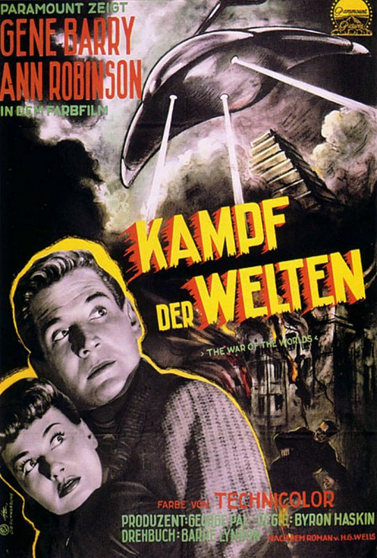

von Sven Wedekin

Der Kampf der Welten - 1953 (© Paramount)
(sw) – Der Mars galt schon von jeher, als der Planet des Sonnensystems, welcher der Erde am ähnlichsten ist. Bereits im neunzehnten Jahrhundert zogen daher auch ernsthafte Wissenschaftler die Möglichkeit in Betracht, dass er von intelligenten Wesen bevölkert sein könnte, welche uns Menschen vielleicht feindlich gesonnen sein mochten. Zur gleichen Zeit befand sich das Britische Imperium auf dem Höhepunkt seiner Macht: Rings um den Erdball hatte es seine Kolonien errichtet und sich so zum größten Weltreich der Geschichte entwickelt. Als Satire auf den maßlosen Expansionsdrang seines Heimatlandes veröffentlichte der Schriftsteller H.G. Wells im Jahr 1898 seinen stilprägenden Roman Der Krieg der Welten, in dem die britische Insel von aggressiven Marsbewohnern angegriffen wird, die von dort aus die ganze Erde erobern wollen. Das Militär steht der technologischen Übermacht der Fremden absolut hilflos gegenüber. Im letzten Augenblick erst können sie schließlich doch noch gestoppt werden, aber nicht durch den Einsatz von Waffengewalt, sondern durch die Ansteckung mit Krankheitserregern, gegen die der Mensch immun ist, aber für die Marsianer tödlich sind.
Rettung aus dem Nichts
1953 realisierte der US-Regisseur Byron Haskin für Paramount Pictures eine für damalige Verhältnisse sündhaft teure Adaption von Wells klassischer Geschichte. In seinem Film Kampf der Welten sind erwartungsgemäß die USA das erste Angriffsziel. Der Film entstand in einer Zeit, in der die Angst vor einer atomaren Auseinandersetzung mit der Sowjetunion in der amerikanischen Bevölkerung besonders groß war. Gleichzeitig herrschte ein unerschütterlicher Glaube an die moralische Überlegenheit gegenüber dem Klassenfeind vor. Doch so wie Wells Roman den Kolonialismus Großbritanniens aufs Korn nahm, hinterfragt Haskins Film diesen allgemein verbreiteten Glauben seiner Landsleute an die eigene Unbesiegbarkeit. Denn selbst der Einsatz der Atombombe – an dessen Entwicklung die von Gene Berry dargestellte Hauptfigur des Films, der Physiker Clayton Forrester, nicht zufällig mitgearbeitet hatte – vermag den Vormarsch der Außerirdischen nicht zu stoppen.
Die Ironie der Schlusspointe des Romans wird dadurch noch stärker betont. Die Menschheit vermag trotz des Einsatzes ihrer tödlichsten Waffen nichts gegen die Bedrohung auszurichten, während es unscheinbare Kleinstlebewesen sind, die sie vor der Ausrottung bewahrt. Im Gegensatz zum Buch wird dieser Umstand sogar noch um eine religiöse Dimension erweitert, was dem Atheisten Wells aber wohl eher nicht gefallen hätte. Kurz vor dem Ende suchen die verzweifelten Menschen in einer Kirche Zuflucht und beten inbrünstig zu Gott. Unmittelbar danach stürzen die ersten außerirdischen Flugmaschinen vom Himmel. Für die unerwartete Rettung der Menschheit in letzter Minute wird somit Gottes Weisheit verantwortlich gemacht, der es zu verdanken sei, dass die Invasoren den kleinsten und vermeintlich primitivsten Lebensformen auf Erden nichts entgegenzusetzen haben. Dieses aus heutiger Sicht etwas pathetisch erscheinende Handlungselement weist Kampf der Welten als typisch amerikanisches Produkt seiner Zeit aus.
Dasselbe gilt auch für Steven Spielbergs recht freie Interpretation des Stoffes aus dem Jahr 2005 mit Schauspieler Tom Cruise in der Hauptrolle. Entstanden nur wenige Jahre nach den verheerendsten Terroranschlägen der Geschichte, benutzt er das Motiv der Alieninvasion als Metapher für die Angst vor einem fremden Feind, der wahllos alles tötet, was ihm vor die Strahlenkanone kommt, und dessen Absichten für seine Opfer völlig unklar sind.
Und auch hier wird wieder die Sinnlosigkeit des Einsatzes von Waffengewalt gegen einen solchen Feind gezeigt: Die Projektile von Panzern und Kampfhubschraubern prallen einfach an den Schutzschilden der außerirdischen Kriegsmaschinen ab. Zugleich zeigt Spielberg, weit deutlicher als Haskins Version, die Verzweiflung der Menschen, beispielhaft am Schicksal einer typischen Mittelschichtfamilie, angesichts der Erbarmungslosigkeit der Invasoren. Spielbergs Film ist ein Kommentar auf den vor allem in der westlichen Welt vorherrschenden Glauben, dass sich Gewalt mit Gegengewalt bekämpfen ließe. Er zeigt die Unfähigkeit der Menschen sich gegen einen übermächtigen Gegner zur Wehr setzen zu können, und wie es schließlich nicht der Mensch, sondern die Natur selbst ist, die die totale Zerstörung unserer Zivilisation noch im letzten Moment verhindert. Die Rolle, die bei Haskins die Religion gespielt hat, nimmt bei Spielberg die Familie ein, deren Zusammenhalt am Ende gegen den Zerfall aller gesellschaftlichen Strukturen triumphiert.
Die Botschaft von Spielbergs Version von Der Krieg der Welten lautet also, dass die kleinste Einheit des menschlichen Zusammenlebens stets über das Böse siegt, genauso wie die kleinste Einheit des Lebens über die vermeintlich unbesiegbaren Außerirdischen.
Eine Warnung vor der Maßlosigkeit
So ist sowohl H.G. Wells nunmehr fast hundertzwanzig Jahre alte Fabel vom Kampf zweier Welten, sowie ihre jeweiligen Adaptionen immer ein Spiegelbild der Ängste der jeweiligen Zeit gewesen, in der sie entstanden sind. Auffallend ist, dass sich diese Ängste in all den Jahren kaum geändert haben. Immer ist es die Furcht vor einer fremden und daher unberechenbaren Macht, die keine Gnade kennt und deren Motive bis zum Schluss im Dunkeln bleiben. Und immer ist da auch die Hoffnung auf Rettung, entweder durch militärische Gewalt, durch die Macht des Gebets oder durch familiäre Solidarität. Aber schlussendlich erweisen sich all diesen Hoffnungen als trügerisch. Die Außerirdischen werden stets ohne Zutun des Menschen besiegt, vielmehr besiegen sie sich letztlich selbst, werden Opfer ihrer eigenen Eroberungsgelüste, die sie blind für Gefahren machen.
Dies ist die zeitlose Botschaft des Romans: In ihrer Unersättlichkeit streben menschliche Eroberer ständig danach ihren Herrschaftsbereich immer weiter auszudehnen und merken meistens – wenn überhaupt – erst wenn es zu spät ist, dass sie sich dabei selbst und alle, die ihnen folgen ins Unglück stürzen.
Der Krieg der Welten ist eine zeitlose Parabel, die uns drastisch vor Augen führt, wie anmaßend der vor allem in den Industrienationen verbreitete Glaube ist, die Welt, in der wir leben kontrollieren zu können. Allen unseren Versuchen uns die Natur untertan zu machen zum Trotz, ist unser aller Schicksal auch in unserer hochtechnisierten Welt von ihr abhängig. In unseren Bestreben uns über die Natur zu stellen, haben wir uns selbst davon überzeugt, dass es uns zusteht die Rohstoffe des Planeten auszubeuten und fremde Länder kolonisieren zu dürfen, ganz ähnlich wie die Marsbewohner die Erde und ihre Ressourcen für sich beanspruchen. H.G. Wells Roman zeigt uns die Gefahren, die in der Anmaßung liegen, dass wir uns selbst für Götter halten, die sich vor nichts fürchten und das naturgegebene Recht hätten unseren Planeten für unsere Bedürfnisse benutzen zu dürfen, wie es uns beliebt. Doch damit unsere Spezies überleben kann, müssen wir aus unseren Fehlern lernen und aufhören zu versuchen unseren Wunsch nach Eroberung nachzugeben, ohne vorher über die Konsequenzen nachzudenken. Denn wenn wir dies nicht tun, wird es uns nicht anders ergehen als den außerirdischen Invasoren, die sich den primitiven Erdlingen so überlegen fühlten, dass sie von Wesen in die Knie gezwungen wurden, von dessen Existenz sie zuvor gar nichts wussten ...